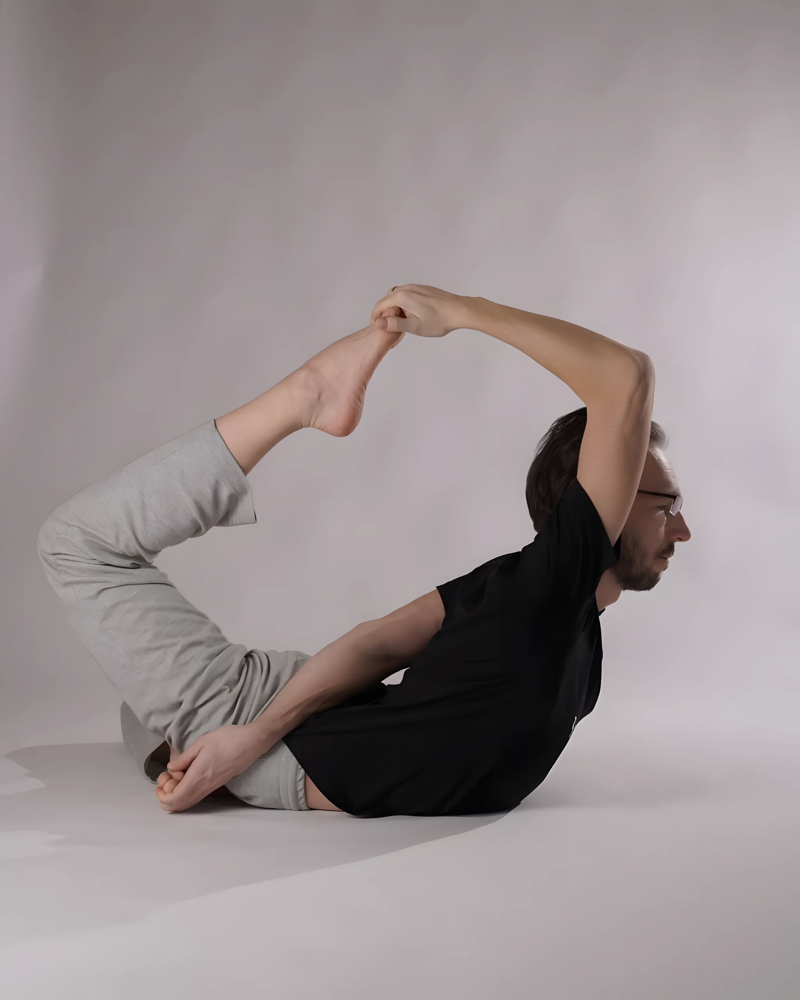

Преподаватель йоги / 15–24 июля 2027
Дмитрий
Дёмин
Преподаватель хатха-йоги и медитации, основатель школы йоги «Чатуранга». Ведёт практики в йога-туре на Камчатку 15–24 июля 2027 года.
Заезд вместе с Глебом Мазаевым.

- Хатха-йога
- медитация
- Чатуранга
- крийя-йога
- Хатха-йога
- медитация
- Чатуранга
- крийя-йога
О Дмитрии
Один из ведущих специалистов по хатха-йоге на постсоветском пространстве
Дмитрий Дёмин практикует хатха-йогу с 2002 года и преподаёт с 2005 года. В 2008–2020 годах был ведущим преподавателем тичерз-курсов в центре йоги «Прана», а программы обучения преподавателей йоги ведёт с 2008 года.
С 2012 года практикует медитацию в традиции крийя-йоги Лахири Махасайи и Шри Юктешвара Гири.
Основатель и ведущий преподаватель школы йоги «Чатуранга». Живёт в Москве, ездит с семинарами по России и сопредельным государствам.
- 24года практики хатха-йоги
- 21год преподаёт йогу
- 18лет обучает преподавателей йоги
- 14лет практикует медитацию в традиции крийя-йоги
- 01
Школа йоги «Чатуранга»
Основатель и ведущий преподаватель школы.
- 02
Центр йоги «Прана»
Ведущий преподаватель тичерз-курсов с 2008 по 2020 год.
- 03
РГУФК, 2011
Дипломированный специалист по лечебной физкультуре.
- 04
Книги и открытые материалы
Автор книг по теории и практике йоги и большого числа бесплатных материалов по всем аспектам йоги.
Хатха-йога и медитация
Три опоры практики Дмитрия, на которых он больше пятнадцати лет учит и учеников, и преподавателей.
Учит не только практиковать, но и преподавать
Программы подготовки преподавателей йоги с 2008 года.
- 01
Хатха-йога
Практика с 2002 года, преподавание с 2005-го. Один из ведущих специалистов на постсоветском пространстве.
- 02
Медитация
С 2012 года в традиции крийя-йоги Лахири Махасайи и Шри Юктешвара Гири.
- 03
Обучение преподавателей
Программы подготовки преподавателей йоги с 2008 года, в 2008–2020 годах тичерз-курсы центра «Прана».
Дмитрий в практике
Нажмите на фото, чтобы открыть его крупно.
Дмитрий ведёт йога-тур на край земли
Йога-тур «Камчатка» с практиками йоги, пранаямы и медитации — 15–24 июля 2027 года. Восхождения к вулканам, Тихий океан и возвращение к себе вечером.
- 01
Даты тура
15–24 июля 2027 года, десятидневная программа.
- 02
Два преподавателя
Практики ведут Дмитрий Дёмин и Глеб Мазаев.
- 03
Всё включено
Группы до 24 человек: трансферы, проживание, трёхразовое питание и экскурсии.
- 04
Стоимость
от 230 000 ₽ с человека за 10 дней, в зависимости от размещения.
Группа до 24 человек — места ограничены.
Заезд 15–24 июля ведут вдвоём
В этом заезде практики ведут сразу два преподавателя хатха-йоги и медитации.
 Вы на страницеДмитрий
Вы на страницеДмитрийДёминПреподаватель хатха-йоги и медитации, основатель школы йоги «Чатуранга»
 Второй ведущийГлеб
Второй ведущийГлебМазаевПреподаватель хатха-йоги и медитацииСтраница Глеба
Связаться
Вопрос о туре
Напишите, что важно для вас в практике и путешествии, — подскажем, подойдёт ли этот заезд.
Тур-лидер: +7 909 832-30-88, Telegram @elena_53east_yoga